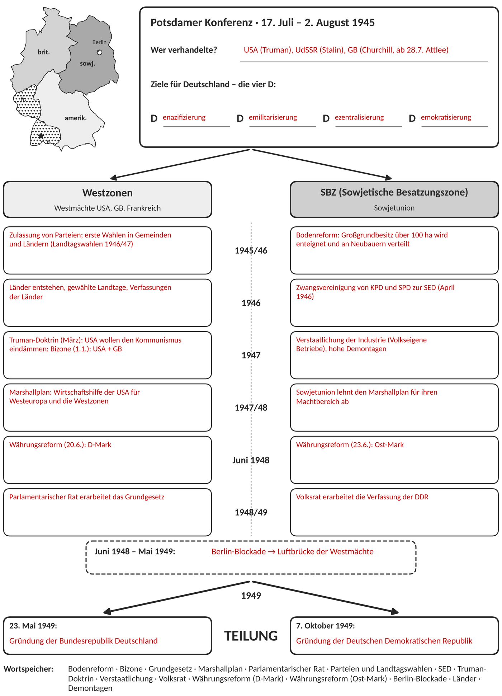

Lösungen Arbeitsauftrag
Wiederholung vor der Klassenarbeit: Teilung Deutschlands 1945–1949
Blatt 1 · Tafelbild: Der Weg zur Teilung
Vergleiche mit deinem Tafelbild. Die roten Einträge sind die Lösung. Andere passende Formulierungen zählen auch.

Merksatz: Die Siegermächte hatten in Potsdam eine gemeinsame Politik für ganz Deutschland vereinbart.
Im Kalten Krieg gingen West und Ost aber getrennte Wege – politisch (Parteien, Wahlen gegen SED-Herrschaft) und wirtschaftlich
(Marshallplan und D-Mark gegen Enteignungen und Planwirtschaft). 1949 entstanden zwei deutsche Staaten.
Blatt 2 · Karikatur „Die deutschen siamesischen Zwillinge“
So sieht eine gute Lösung aus. Prüft Punkt für Punkt, was euer Partner schon hat.
1 Beschreibung
- Formales: Titel „Die deutschen siamesischen Zwillinge“, Zeichner Ernst Maria Lang (Signatur „L“ unten rechts), erschienen in der Süddeutschen Zeitung (München), 1948. Schwarz-weiße Federzeichnung.
- Mitte: zwei magere, zusammengewachsene Kinder (siamesische Zwillinge) mit Zipfelmützen sitzen in einem Kinderhochstuhl.
- Links: Uncle Sam (Zylinder mit Sternen) füttert den linken Zwilling mit einem Löffel aus einer Schüssel. Hinter ihm stehen Marianne (Mütze mit Kokarde) und John Bull (Hut mit Union Jack, gestreifte Weste). Sie wirken wohlgenährt und zufrieden.
- Rechts: Aus dem Dunkel greift eine riesige, bärtige Gestalt mit einer Pranke nach dem rechten Zwilling und streichelt ihn.
- Wirkung: Die linke Bildhälfte ist hell, die rechte dunkel und bedrohlich. Die Zwillinge schauen ängstlich und unsicher.
2 Interpretation
- Symbole: Die Zwillinge stehen für Deutschland bzw. die Deutschen; die Zipfelmütze ist die Mütze des „deutschen Michel“. Siamesisch heißt: Die beiden Teile gehören zusammen, eine Trennung ist lebensgefährlich. Der Hochstuhl zeigt: Deutschland ist unmündig, es kann nicht selbst entscheiden.
- Figuren: Uncle Sam = USA, Marianne = Frankreich, John Bull = Großbritannien, also die Westmächte. Die dunkle Gestalt rechts = Sowjetunion (Stalin bzw. der „russische Bär“).
- Füttern: Die Westmächte versorgen „ihre“ Hälfte (CARE-Pakete, Marshallplan, Bizone). Die Sowjetunion zieht die andere Hälfte zu sich. Jede Seite bindet ihren Teil an sich.
- Aussage: Die Besatzungsmächte ziehen Deutschland in zwei Richtungen. Die Deutschen haben nichts zu sagen. Wenn das so weitergeht, wird das, was zusammengehört, auseinandergerissen – eine Warnung vor der Teilung.
- Zeitliche Einordnung: 1948, Kalter Krieg: Truman-Doktrin und Marshallplan (1947), Londoner Konferenz der Westmächte (Frühjahr 1948), Währungsreform (Juni 1948), Berlin-Blockade (ab Juni 1948). 1949 werden BRD und DDR gegründet – die Befürchtung des Zeichners tritt ein.
- Perspektive: Westdeutscher Zeichner, Zeitung in der amerikanischen Zone. Die Westmächte sind freundlich gezeichnet, wenn auch etwas selbstzufrieden; die Sowjetunion wirkt dunkel und bedrohlich. Die Karikatur ist also nicht neutral.